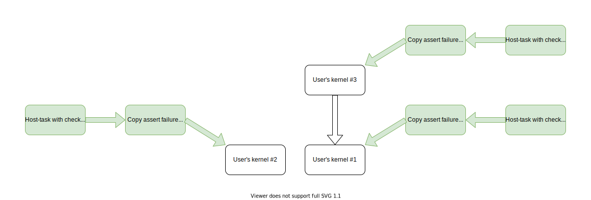

Assert feature¶
IMPORTANT: This document is a draft.
Using the standard C++ assert API (“assertions”) is an important debugging
technique widely used by developers. This document describes the design of
supporting assertions within SYCL device code.
The basic approach we chose is delivering device-side assertions as call to
std::abort() at host-side.
As usual, device-side assertions can be disabled by defining NDEBUG macro at
compile time.
Use-case example¶
#include <cassert>
#include <sycl/sycl.hpp>
using namespace sycl;
void user_func(item<2> Item) {
assert((Item[0] % 2) && “Nil”);
}
int main() {
queue Q;
Q.submit([&] (handler& CGH) {
CGH.parallel_for<class TheKernel>(range<2>{N, M}, [=](item<2> It) {
do_smth();
user_func(It);
do_smth_else();
});
});
Q.wait();
std::cout << “One shouldn’t see this message.“;
return 0;
}
In this use-case every work-item with even index along 0 dimension will trigger
assertion failure. Assertion failure should trigger a call to std::abort() at
host as described in
extension.
Even though multiple failures of the same or different assertions can happen in
multiple work-items, implementation is required to deliver at least one
assertion. The assertion failure message is printed to stderr by DPCPP
Runtime or underlying backend.
When multiple kernels are enqueued and more than one fail at assertion, at least one assertion should be reported.
User requirements¶
From user’s point of view there are the following requirements:
# |
Title |
Description |
Importance |
|---|---|---|---|
1 |
Abort DPC++ application |
Abort host application when assert function is called and print a message about assertion |
Must have |
2 |
Print assert message |
Assert function should print message to stderr at host |
Must have |
3 |
Stop under debugger |
When debugger is attached, break at assertion point |
Highly desired |
4 |
Reliability |
Assert failure should be reported regardless of kernel deadlock |
Highly desired |
Implementations without enough capabilities to implement fourth requirement are allowed to realize the fallback approach described below, which does not guarantee assertion failure delivery to host, but is still useful in many practical cases.
Terms¶
Device-side Runtime - runtime library supplied by the Native Device Compiler and running on the device.
Native Device Compiler - compiler which generates device-native binary image based on input SPIR-V image.
Low-level Runtime - the backend/runtime behind DPCPP Runtime attached via the Plugin Interface.
How it works?¶
assert(expr) macro ends up in call to __devicelib_assert_fail. This function
is part of Device library extension.
The format of the assert message is unspecified, but it will always include the
text of the failing expression, the values of the standard macros __FILE__ and
__LINE__, and the value of the standard variable __func__. If the failing
assert comes from an nd_range parallel_for it will also include the global
ID and the local ID of the failing work item.
Implementation of this function is supplied by Native Device Compiler for safe approach or by DPCPP Compiler for fallback one.
In order to distinguish which implementation to use, DPCPP Runtime checks for
PI_DEVICE_INFO_EXTENSION_DEVICELIB_ASSERT extension. If the extension isn’t
available, then fallback implementation is used.
Safe approach¶
This is the preferred approach and implementations should use it when possible.
It guarantees assertion failure notification delivery to the host regardless of
kernel behavior which hit the assertion. If backend suports the safe approach,
it must report this capability to DPCPP Runtime via the
PI_DEVICE_INFO_EXTENSION_DEVICELIB_ASSERT extension query.
The Native Device Compiler is responsible for providing implementation of
__devicelib_assert_fail which completely hides details of communication
between the device code and the Low-Level Runtime from the SYCL device compiler
and runtime. The Low-Level Runtime is responsible for:
detecting if assert failure took place;
flushing assert message to
stderron host.
The following sequence of events describes how user code gets notified:
Device side:
Assert fails in device-code in kernel // It’s not defined if GPU thread stops execution // Other GPU threads are left untouched
Specialized version of
__devicelib_assert_failis calledDevice immediately signals to host (Low-Level Runtime)
Host side:
The assert failure gets detected by Low-Level Runtime
Low-Level Runtime prints assert failure message to
stderrLow-Level Runtime calls
abort()
Fallback approach¶
If Device-side Runtime doesn’t support __devicelib_assert_fail (as reported
via PI_DEVICE_INFO_EXTENSION_DEVICELIB_ASSERT extension query) then a fallback
approach comes in place. The approach doesn’t require any support from
Device-side Runtime and Native Device Compiler. Neither it does from Low-level
Runtime.
Within this approach, a mutable program scope variable is introduced. This
variable stores a flag which says if an assert failure was encountered. Fallback
implementation of __devicelib_assert_fail atomically raises the flag so that
DPCPP Runtime is able to detect assert failure after kernel finishes.
The following sequence of events describes how user code gets notified:
Device side:
Assert fails in device-code in kernel
Fallback version of
__devicelib_assert_failis calledAssert information is stored into program-scope variable
Kernel continues running
Host side:
A copy ‘kernel’ is enqueued as the one depending on user’s kernel to get the value of assert failure flag.
A host-task is enqueued to check value of assert failure flag.
The host task calls abort whenever assert failure flag is set.
DPCPP Runtime will automatically check if assertions are used in the kernel being run, and won’t enqueue the auxiliary kernels if assertions are not used. So there is no host-side runtime overhead when assertion are not used.
Illustrating this with an example, lets assume the user enqueues three kernels:
Kernel #1, uses assertKernel #2, uses assertKernel #3, uses assert and depends onKernel #1
The resulting graph will look like this: 
Interface to program scope variable¶
Multiple translation units could be compiled/linked into a single device binary
image. All of them should have extern declaration of program scope variable
available. Definition of the variable is only available within devicelib in the
same binary image where fallback __devicelib_assert_fail resides.
The variable has the following structure and declaration:
struct __SYCL_AssertHappened {
int Flag = 0;
char Expr[256 + 1] = "";
char File[256 + 1] = "";
char Func[128 + 1] = "";
int32_t Line = 0;
uint64_t GID0 = 0;
uint64_t GID1 = 0;
uint64_t GID2 = 0;
uint64_t LID0 = 0;
uint64_t LID1 = 0;
uint64_t LID2 = 0;
};
#ifdef __SYCL_DEVICE_ONLY__
extern SYCL_GLOBAL_VAR __SYCL_AssertHappened __SYCL_AssertHappenedMem;
#endif
Here, SYCL_GLOBAL_VAR is a macro which wraps special attribute to allow for
mutable program-scope variable.
The reference to extern variable is resolved within online-linking against fallback devicelib.
Description of fields¶
The value stored here denotes if assert happened at all. There are two valid values at host:
Value |
Meaning |
|---|---|
0 |
No assert failure detected |
2 |
Assert failure detected and reported within this instance of struct |
At device-side, there’s another valid value: 1, which means that assert failure is detected and the structure is filling up at the moment. This value is for device-side only and should never be reported to host. Otherwise, it means, that atomic operation malfunctioned.
Expr, File, Func, Line are to describe the assert message itself and
contain the expression, file name, function name, line in the file where assert
failure had happened respectively.
GID* and LID* fields describe the global and local ID respectively of a
work-item in which assert had failed.
Online-linking fallback __devicelib_assert_fail¶
Online linking against fallback implementation of __devicelib_assert_fail is
performed only when assertion is enabled and Device-side Runtime doesn’t provide
implementation of __devicelib_assert_fail.
In DPCPP headers one can see if assert is enabled with status of NDEBUG macro
with #ifdef’s. When in DPCPP Runtime Library this knowledge is obtained from
device binary image descriptor’s property sets.
Each device image is supplied with an array of property sets. For description
of property sets see struct pi_device_binary_struct in
pi.h
A distinct property set SYCL/assert used is added. In this set a property
with the name of the kernel is added whenever the kernel uses assert. The use of
assert is detected by a specific LLVM IR pass invoked by the sycl-post-link
tool which runs on linked device code, i.e. after linking with the libsycl-crt
library which defines the assert function. The pass builds complete call graph
for a kernel, and sees if there’s a call to __devicelib_assert_fail anywhere
in the graph. If found, sycl-post-link adds the property for the kernel.
The same is done for all indirect callable functions (marked with specific
attribute) found in the linked device code. Those are functions whose pointers
can be taken and passed around in device code. If a callgraph for any such
function has a call to __devicelib_assert_fail, then all kernels in the module
are conservatively marked as using asserts.
The added property is used for:
deciding if online-linking against fallback devicelib is required;
if there’s a need to enqueue program scope variable copier kernel and checker host-task.
Suppose the following example user code:
void user_func(int X) {
assert(X && “X is nil”);
}
int main() {
queue Q(...);
Q.submit([&] (handler& CGH) {
CGH.single_task([=] () {
do_smth();
user_func(0);
do_smth_else();
});
});
...
}
The following LLVM IR pseudo code will be generated after linking against fallback implementation of devicelib:
@AssertHappenedMem = global AssertHappened
/// user's code
void user_func(int X) {
if (!(X && “X is nil")) {
__assert_fail(...);
}
}
kernel(...) {
do_smth()
user_func(0);
do_smth_else();
}
/// __assert_fail belongs to Linux version of devicelib
void __assert_fail(...) {
...
__devicelib_assert_fail(...);
}
void __devicelib_assert_fail(Expr, File, Line, GlobalID, LocalID) {
...
volatile int *Ptr = (volatile int *)AssertHappenedMem.Flag;
int Expected = 0;
int Desired = 1;
if (atomic_CAS(&AssertHappenedMem.Flag, Expected, Desired))
printf("Assertion `%s' failed in %s at line %i. GlobalID: %i, LocalID: %i",
Expr, File, Line, GlobalID, LocalID);
}
Compiling with assert enabled/disabled¶
Consider the following example sources:
// impl.cpp
using namespace sycl;
int calculus(int X) {
assert(X && "Invalid value");
return X * 2;
}
void enqueueKernel(queue &Q, buffer &B) {
Q.submit([](handler &H) {
auto Acc = B.get_access<read_write>(H);
H.parallel_for(/* range */, [](item It) {
assert(Acc[It]);
// ...
});
});
}
// main.cpp
// ...
using namespace sycl;
SYCL_EXTERNAL int calculus(int);
void enqueueKernel(queue&, buffer&);
void workload() {
queue Q;
buffer B;
Q.submit([](handler &H) {
auto Acc = B.get_access<read_write>(H);
H.parallel_for(/* range */, [](item It) {
int X = calculus(0); // should fail assertion
assert(X && "Nil in result");
Acc[It] = X;
});
});
enqueueKernel(Q, B);
...
}
These two files are compiled into a single binary application. There are four
states of definition of NDEBUG macro available:
# |
|
|
|---|---|---|
1 |
defined |
defined |
2 |
defined |
undefined |
3 |
undefined |
defined |
4 |
undefined |
undefined |
States of definition of NDEBUG macro defines the set of assertions which can
fail.
Raising assert failure flag and reading it on host¶
In DPCPP headers one can see if assert is enabled with status of NDEBUG macro
with #ifdef’s. Though, in order to support for multi translation unit use-case
it’s not allowed to rely on definition of NDEBUG macro.
Note: Multi translation unit use-case here is the one with SYCL_EXTERNAL
function compiled with assertions enabled and used in a kernel but the kernel
is compiled with assertions disabled.
There’re two commands used for reading assert failure flag: copy kernel and
checker host task. The copy kernel will copy AssertHappenedMem to host and
host-task will check the Flag value and abort() as needed. The kernel and
host task are enqueued together with a kernel only when the corresponding device
binary image for this kernel tells that it may use (maybe indirectly) the
assert in its code.
All translation units provided by the user should have a declaration of the assert flag read function available:
int __devicelib_assert_read(void);
Also, the AssertHappened structure type should be available for the copier kernel.
The definition is only provided within devicelib along with
__devicelib_assert_fail function which raises the flag.
Reading of assert failure flag is performed with the help of auxiliary kernel which is enqueued as dependent on user’s one. The flag state is checked later in host-task. This is achieved with approximately the following changes:
class AssertFlagCopier;
#ifdef __SYCL_DEVICE_ONLY__
int __devicelib_assert_read(void);
#endif
class queue {
template <typename T> event submit(T CGF) {
event Event = submit_impl(CGF);
std::string KernelName = /* get kernel name from calls to parallel_for, etc. */;
// assert required
if (!get_device()->assert_fail_supported() && isAssertUsed(KernelName)) {
// __devicelib_assert_fail isn't supported by Device-side Runtime
// Linking against fallback impl of __devicelib_assert_fail is performed
// by program manager class
AssertHappened *AH = new AssertHappened;
buffer<AssertHappened, 1> *Buffer = new buffer<AssertHappened, 1>{1, AH};
// read flag value
event CopierEv = submit_impl([&](handler &CGH) {
CGH.depends_on(Event);
auto Acc = Buffer->get_access<access::mode::write>(CGH);
CGH.single_task<AssertFlagCopier>([=] {
#ifdef __SYCL_DEVICE_ONLY__
Acc[0].Flag = __devicelib_assert_read();
#endif
});
});
// check flag state
submit_impl([=](handler &CGH) {
CGH.depends_on(CopierEv);
CGH.codeplay_host_task([=] {
if (AH->Flag)
abort();
free(Buffer);
free(AH);
});
});
}
return Event;
}
};